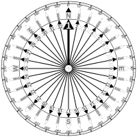
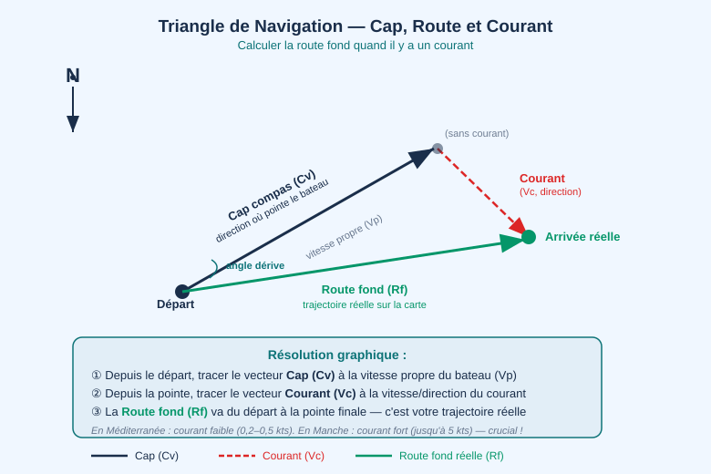

Compas, Cap et Route — Les Trois Nords
Mercredi matin, 8h00. À bord, ancré baie de Fethiye.
William a étalé la carte et son rapporteur — son café d'une main, le crayon de l'autre. Il veut tracer la route vers Ölüdeniz : cap 245, d'après ses calculs. Mais le compas de bord indique 238 quand il met le bateau dans le sens qu'il pense être le bon.
"Il y a un problème avec le compas ?" dit-il à Emmanuel qui arrive avec son propre café.
"Non. Le problème, c'est que tu as oublié que le nord magnétique et le nord de ta carte ne sont pas au même endroit." William fronce les sourcils. "Il y a plusieurs Nords ?" Christelle, qui a entendu depuis la descente : "Ah oui — ça, c'est dans le livre. Trois Nords." Rebeca, depuis la cabine : "Réveillez-moi quand vous avez un seul Nord."
William fronce les sourcils. "Il y a plusieurs Nords ?"
"Trois. Et le permis côtier veut que tu les connaisses tous."
Les trois Nords
En navigation maritime, il existe trois références nord distinctes. Confondre l'une avec l'autre peut vous envoyer plusieurs degrés hors de votre route.
| Nord | Définition | Référence |
|---|---|---|
| Nord Vrai (Nv) | Pôle géographique | Les cartes marines |
| Nord Magnétique (Nm) | Pôle magnétique terrestre | Les boussoles |
| Nord Compas (Nc) | Ce que lit votre compas de bord | Compas du bateau |

Pour se repérer sur un compas, il faut d'abord comprendre la rose des vents. Le cercle complet de l'horizon est divisé en 360 degrés, à partir du Nord (0° / 360°). Les quatre points cardinaux — Nord (000°), Est (090°), Sud (180°), Ouest (270°) — découpent le cercle en quadrants. Entre eux, les points intercardinaux (NE à 045°, SE à 135°, SW à 225°, NW à 315°) permettent de nommer rapidement une direction sans donner le cap exact.

La rose des vents traditionnelle : 360° autour du cercle, les quatre cardinaux en gras, les intercardinaux entre eux. En navigation, on exprime toujours les caps en trois chiffres (045°, pas 45°).
Le Nord Vrai est le pôle géographique de la Terre — le point autour duquel elle tourne. C'est la référence des cartes marines et de tous les caps vrais que vous tracez avec un rapporteur. Il est parfaitement stable.
Le Nord Magnétique est là où pointent les aiguilles de boussole sous l'effet du champ magnétique terrestre. Il se déplace lentement — d'environ 50 km par an — ce qui signifie que la correction à appliquer change légèrement chaque année. C'est ce que lit n'importe quelle boussole ou compas magnétique sans être perturbé par les masses métalliques.
Le Nord Compas est ce que lit spécifiquement votre compas de bord, après avoir subi l'influence des masses métalliques et des équipements électroniques du bateau lui-même. C'est la valeur affichée sur votre compas en navigation — elle inclut à la fois l'écart au nord vrai et les perturbations propres au bateau.
Pourquoi tout ça compte : votre carte donne des caps vrais, votre compas de bord donne des caps compas. Pour naviguer correctement, vous devez convertir d'un système à l'autre à chaque calcul de route.
Voir concepts/navigation-relevements-et-caps, concepts/cap-route-derive.
La variation magnétique (déclinaison)
La variation magnétique (aussi appelée déclinaison) est l'angle entre le nord vrai (carte) et le nord magnétique (boussole). Elle dépend de votre position géographique et change légèrement chaque année.
Chaque carte marine imprime la variation sur sa rose des vents, avec l'année de référence et le taux annuel de changement. Par exemple : "Var. 4°E (2024), augmente de 0°08'/an". Vous calculez la variation actuelle en appliquant ce taux.
Le cadran ci-dessous montre comment les degrés sont disposés sur un compas de bord. Le cercle est gradué de 0° à 360°, avec des repères tous les 5° ou 10° selon les modèles. La ligne de foi (le trait fixe sur le boîtier) indique le cap du bateau : c'est le degré qu'elle coupe sur le cadran mobile qui donne le cap compas.

Le cadran du compas tourne librement sous l'effet du champ magnétique. La ligne de foi, solidaire du bateau, coupe le cadran au cap actuel. Lisez toujours le chiffre côté ligne de foi, pas côté opposé.
Une variation Est signifie que le nord magnétique est à l'est du nord vrai — votre compas non corrigé donne un cap inférieur au cap vrai. Une variation Ouest donne l'inverse.
Dans le golfe de Göcek : La variation est d'environ +4° E (2026) — le nord magnétique est à 4° à l'est du nord vrai.
Formule de conversion :
Cap Magnétique = Cap Vrai – Variation Est
Cap Magnétique = Cap Vrai + Variation Ouest
Moyen mnémotechnique anglophone très utilisé : "East is least, West is best" — une variation Est se soustrait du cap vrai pour donner le cap magnétique. Ou la formule française CanDéVier (Compas → Déviation → Variation → Vrai) rappelle l'ordre des corrections.
La déviation du compas
La déviation est l'erreur du compas de bord due aux masses métalliques et électriques du bateau lui-même. Elle varie selon le cap.
Les causes de déviation sont nombreuses à bord : le bloc-moteur est la source la plus importante, mais la chaîne d'ancre stockée dans la jupe avant, le tableau de bord électronique, les haut-parleurs (qui contiennent des aimants), les câbles d'alimentation courant fort et même les boîtes de conserve stockées dans le carré peuvent perturber le compas. Cette perturbation n'est pas constante : elle change selon la direction dans laquelle pointe le bateau, ce qui rend la déviation spécifique à chaque cap.
Pour cartographier la déviation, on crée une table de déviation (courbe de déviation) : on note l'écart entre ce que lit le compas et la direction réelle (obtenue par GPS ou par un alignement connu) pour une douzaine de caps différents. Cette table est valable pour un bateau donné, dans une configuration d'équipement stable.
En pratique pour le permis côtier : si la déviation est inconnue, utilisez le COG (Course Over Ground) de votre GPS en ligne droite pour comparer avec votre cap compas sur plusieurs caps — cela vous donne une estimation utile.
Construire une courbe de déviation — la méthode du tour
Pour produire une vraie courbe de déviation, on fait tourner le bateau sur lui-même par mer calme et on compare le compas à une référence connue à chaque cap : on aligne le bateau sur deux amers en transit (la référence vraie), on lit le compas (la référence magnétique avec déviation), et la différence donne la déviation à ce cap. On répète tous les 30° (12 points autour de la rose) — l'ensemble produit une courbe ou un tableau qu'on garde près du compas.
La méthode "GPS COG vs cap compas" donne une approximation acceptable en croisière côtière mais ne remplace pas un swing par mer plate. Sur le Deniz Rüzgarı, Emmanuel avait fait ce relevé dans le port de Göcek le premier matin — la déviation maximale était de +3° par le cap 045°, nulle par le cap 180°.
Voir concepts/compas-deviation.
Total : Cap Vrai = Cap Compas + Déviation + Variation
Ou avec le moyen mnémotechnique : CanDéVier (Compas → Déviation → Variation → Vrai).
Schéma de conversion CanDéVier :
Compas (Cc) ──[+Déviation]──► Magnétique (Cm) ──[+Variation]──► Vrai (Cv)
◄──[−Déviation]── ◄──[−Variation]──
De gauche à droite (compas → vrai) : on AJOUTE les corrections. De droite à gauche (vrai → compas) : on les SOUSTRAIT. Attention au signe : Est = positif, Ouest = négatif. Exemple Göcek : Cap compas 238°, déviation +2°, variation +4°E → Cap vrai = 238 + 2 + 4 = 244°V.
Cap, route fond, route surface

Imaginez un nageur qui traverse une rivière. Il nage vers l'autre rive en gardant une direction perpendiculaire — c'est son cap. Mais le courant le déporte vers l'aval — c'est l'effet du courant. Sa trajectoire réelle sur le fond de la rivière fait un angle — c'est sa route fond. Si en plus il est légèrement poussé de côté par le vent, sa route dans l'eau s'écarte encore légèrement de son cap — c'est la dérive.
En navigation maritime, c'est exactement la même mécanique :
| Terme | Définition |
|---|---|
| Cap (Heading) | Direction dans laquelle pointe la proue — ce que montre votre compas |
| Route surface | Cap corrigé du vent (angle de dérive) — trajectoire dans l'eau |
| Route fond | Trajectoire réelle sur la carte (after current + leeway) — ce que mesure le GPS comme COG |
| Dérive | Angle entre la route surface et la route fond due aux courants |
La dérive de vent (leeway) est l'angle entre le cap barré et la route dans l'eau. Elle existe dès que le vent est sur le travers ou plus avant. Par force 4 au près sur un voilier de 12 m, comptez 2 à 5°. Elle s'ajoute côté sous-le-vent : vent sur bâbord = dérive vers tribord.
Le courant s'ajoute en vecteur sur la route dans l'eau pour donner la route fond. C'est pourquoi deux navigateurs peuvent barrer le même cap et avoir des routes fond très différentes selon les courants locaux.
Voir concepts/cap-route-derive.
Les relèvements
Un relèvement est l'angle sous lequel vous observez un amer (phare, clocher, cap, bouée), mesuré par rapport au nord. Il permet de vous situer sur une ligne de position — une ligne sur laquelle vous vous trouvez nécessairement.
Comment prendre un relèvement : vous visez l'amer avec votre compas à main (compas de relèvement) et lisez l'angle. Ce relèvement compas (Zc) doit être converti en relèvement vrai (Zv) pour être tracé sur la carte : Zv = Zc + Déviation + Variation.
Tracer sur la carte : depuis le symbole de l'amer sur la carte, tracez une ligne dans la direction inverse du relèvement (180° + le relèvement). Votre bateau se trouve quelque part sur cette ligne.
Deux relèvements simultanés sur deux amers différents donnent votre position par intersection — c'est un point à deux relèvements. Trois relèvements forment souvent un petit triangle, le chapeau triangulaire (cocked hat) : placez-vous toujours du côté du triangle le plus proche du danger, par précaution.
Pour une bonne précision, choisissez des amers dont les relèvements sont séparés d'au moins 60° — plus l'angle de coupure est proche de 90°, plus la position est précise.
Voir concepts/navigation-relevements.
Relèvement constant = collision. Si le relèvement d'un autre navire reste constant pendant que sa distance diminue, vous êtes sur route de collision. La règle de barre s'applique immédiatement.
Route Fethiye → Ölüdeniz (Blue Lagoon, 36°33'N 29°07'E) :
Cap vrai depuis la carte : 245°V
Variation magnétique (Göcek, 2026) : +4°E → Cap magnétique : 241°M
Déviation du compas (cap 245°) : -2° → Cap compas à tenir : 239°C
Distance : 17 NM — environ 2h30 à 7 nœuds.
Prenez un relèvement sur les falaises de Belcekız (pointe est d'Ölüdeniz) quand vous approchez pour confirmer la position.
Question 1 : Cap vrai 090°V, variation magnétique +5°E. Quel cap magnétique tenez-vous ?
- A) 085°M
- B) 090°M
- C) 095°M
Voir la réponse
Réponse : A — Cap magnétique = Cap vrai − Variation Est = 090° − 5° = 085°M. Règle mnémotechnique : "East is least, West is best" (une variation Est se soustrait du cap vrai pour obtenir le cap magnétique ; une variation Ouest s'additionne). B serait correct si la variation était nulle ; C correspond à une variation Ouest.Question 2 : Cap magnétique 240°M, déviation du compas −4°. Quel cap indique le compas de bord ?
- A) 244°Cc
- B) 240°Cc
- C) 236°Cc
Voir la réponse
Réponse : C — Déviation −4° signifie que le compas lit 4° de MOINS que le magnétique. Cap compas = Cap magnétique + Déviation = 240° + (−4°) = 236°Cc. Piège fréquent : si la déviation est négative, le compas sous-estime la valeur magnétique. A correspond à une déviation de +4°.Question 3 : Le relèvement du cap Nord-Ouest de Tersane Island reste constant à 315° depuis 5 minutes, et l'île semble se rapprocher. Que faites-vous ?
- A) Maintenez le cap — un relèvement constant signifie que vous avez la priorité
- B) Ralentissez légèrement pour laisser passer
- C) Danger d'abordage avéré — déterminez qui est prioritaire et manœuvrez immédiatement
Voir la réponse
Réponse : C — Relèvement constant + distance décroissante = routes convergentes = collision certaine si aucun n'agit. "Maintenir le cap" (A) est la réaction du stand-on vessel SEULEMENT si une règle de priorité vous le permet — mais il faut d'abord identifier qui est prioritaire. Ralentir seul (B) est insuffisant si les routes se croisent.Question 4 : Emmanuel explique à William : "Sur une carte, le nord magnétique est décalé de 4° Est par rapport au nord géographique ici. Mais attention, ça change chaque année." De quoi parle-t-il ?
- A) De la déviation — l'erreur propre au compas du Deniz Rüzgarı
- B) De la variation magnétique — le décalage entre nord géographique et nord magnétique, propre à chaque lieu et époque
- C) De la déclinaison astronomique — angle entre l'axe de rotation et le champ magnétique terrestre
Voir la réponse
Réponse : B — La variation magnétique (ou déclinaison magnétique) est le décalage entre le nord vrai (géographique) et le nord magnétique, donné par la rose des vents de la carte. Elle est propre à chaque endroit du globe et varie lentement avec le temps (dérive séculaire). La déviation est l'erreur propre au compas du bateau, due aux masses ferriques ou électroniques à bord.Cap sur Ölüdeniz. À mi-chemin, Emmanuel observe la mer, pensif. "Elle est belle et calme. Mais si on était à Brest, à cette heure-ci, il faudrait vérifier la marée avant de partir..." Rebeca, pinceau en main sur le pont avant, lève la tête : "La marée — c'est la marea en espagnol, presque le même mot. Vous avez ça en Bretagne ? Ici, l'eau monte de combien ?" William sourit : "Vingt centimètres ici. Huit mètres à Brest. C'est exactement le sujet du jour. Parlons marées."
Session 3.2 — Marées et Courants : hauteurs, règle des douzièmes, losanges de courant.